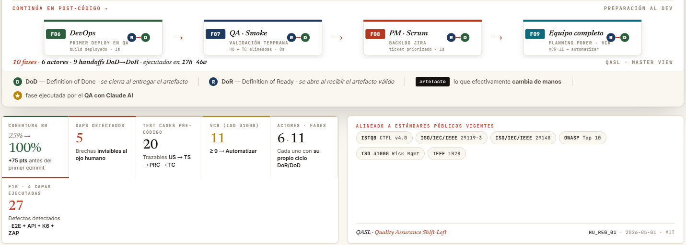

Master View · DoR/DoD encadenado entre 6 actores
La lámina editorial que materializa el método. Visualiza las 11 fases (F0-F10) con su ciclo interno DoR/DoD, los 9 handoffs entre roles y el artefacto que efectivamente cambia de manos en cada uno. Las fases F2 y F5 (estrella dorada) son las ejecutadas por QA con asistencia de Claude AI.


F0 → F10 · METHODOLOGY · MASTER VIEW
Calidad no es una herramienta.
Es un engranaje entre seis actores
donde nadie trabaja solo.
Lámina única HTML/SVG estilo editorial corporativo · paleta papel + tinta + tierra · cada cápsula representa un actor con su ciclo interno DoR/DoD · cada puente lleva el artefacto que pasa de un actor al siguiente · cobertura BR 25% → 100% · 5 gaps detectados · 20 test cases pre-código · VCR ≥ 9 → automatizar.